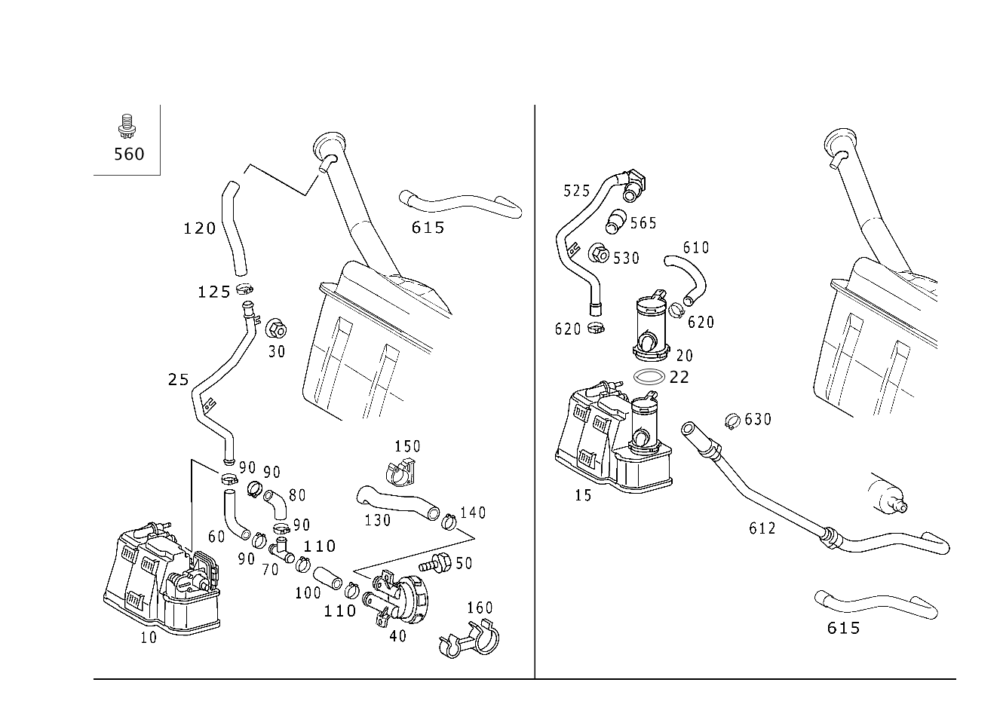

| № | Артикул | Название | Кол. | Примечание | Ограничение |
|---|---|---|---|---|---|
| 10 | A 170 470 09 59 | Фильтр с акт. углем (AKTIVKOHLEFILTER) | 1 | 494 | |
| 15 | A 170 470 12 59 | Фильтр с акт. углем (AKTIVKOHLEFILTER) | 1 | [402] БОЛЬШЕ НЕ ПОСТАВЛЯЕТСЯ | 494 |
| 20 | A 000 476 63 32 | - Запорный клапан | 1 | 494 | |
| 20 | A 000 476 83 32 | - Клапан (VENTIL) | 1 | [402] БОЛЬШЕ НЕ ПОСТАВЛЯЕТСЯ | 494 |
| 20 | A 000 470 49 93 | - Запорный клапан | 1 | 494 | |
| 22 | A 029 997 84 48 | - Уплотнительное кольцо (DICHTRING) | 1 | ФИЛЬТР С АКТИВИРОВАННЫМ УГЛЁМ | 494 |
| 25 | A 170 470 23 64 | Провод (LEITUNG) | 1 | МЕЖДУ ВЕНТИЛ. ШТУЦЕРОМ И УГОЛЬН. ФИЛЬТРОМ [402] БОЛЬШЕ НЕ ПОСТАВЛЯЕТСЯ | (M111/M112)+494 |
| 30 | A 003 990 02 51 | Шестигранная гайка (SECHSKANTMUTTER) | 2 | КРЕПЛЕНИЕ ТРУБКИ УДАЛЕНИЯ ВОЗДУХА | 494 |
| 40 | A 000 997 58 87 | Клапан (VENTIL) | 1 | ПРЕДОХРАНИТЕЛЬНЫЙ КЛАПАН | 494 |
| 50 | N 914007 006013 | Винт с неспадающей шайбой | 2 | КЛАПАН ИЗБЫТ. ДАВЛ. НА УГОЛЬН. ФИЛЬТРЕ; M6X12 | 494 |
| 60 | A 170 476 66 26 | Шланг (SCHLAUCH) | 1 | ВЕНТИЛ. ТРУБОПРОВ. НА Т\-ОБРАЗН. ЭЛЕМЕНТЕ [402] БОЛЬШЕ НЕ ПОСТАВЛЯЕТСЯ | 494 |
| 70 | A 000 997 77 74 | Резьбовое соединение (VERSCHRAUBUNG) | 1 | ВЕНТИЛ. ТРУБОПРОВ. К УГОЛЬН. ФИЛЬТРУ И КЛАПАНУ ИЗБЫТ. ДАВЛ. | 494 |
| 80 | A 170 476 65 26 | Шланг (SCHLAUCH) | 1 | T\-ОБР.ЭЛЕМ. К УГОЛЬН.ФИЛЬТРУ [402] БОЛЬШЕ НЕ ПОСТАВЛЯЕТСЯ | 494 |
| 90 | A 006 997 46 90 | Хомут для шланга (SCHLAUCHSCHELLE) | 2 | ВЕНТИЛ. ТРУБОПРОВ. НА Т\-ОБРАЗН. ЭЛЕМЕНТЕ; 25 MM | 494 |
| 90 | A 006 997 46 90 | Хомут для шланга (SCHLAUCHSCHELLE) | 1 | T\-ОБР.ЭЛЕМ. К УГОЛЬН.ФИЛЬТРУ; 25 MM | 494 |
| 90 | A 006 997 46 90 | Хомут для шланга (SCHLAUCHSCHELLE) | 1 | Т\-ОБР.ЭЛЕМ. К КЛАПАНУ ИЗБ. ДАВЛ.; 25 MM | 494 |
| 90 | A 006 997 29 90 | Хомут для шланга (SCHLAUCHSCHELLE) | 1 | T\-ОБР.ЭЛЕМ. К УГОЛЬН.ФИЛЬТРУ; 27.5 MM \- 28.8 MM | 494 |
| 90 | A 006 997 29 90 | Хомут для шланга (SCHLAUCHSCHELLE) | 1 | Т\-ОБР.ЭЛЕМ. К КЛАПАНУ ИЗБ. ДАВЛ.; 27.5 MM \- 28.8 MM | 494 |
| 90 | A 006 997 46 90 | Хомут для шланга (SCHLAUCHSCHELLE) | 2 | ЗАПРАВОЧ. ПАТРУБОК К ВЕНТИЛЯЦ. ТРУБОПР.; 25 MM | 494 |
| 100 | A 170 476 70 26 | Шланг (SCHLAUCH) | 1 | Т\-ОБР.ЭЛЕМ. К КЛАПАНУ ИЗБ. ДАВЛ. [402] БОЛЬШЕ НЕ ПОСТАВЛЯЕТСЯ | 494 |
| 110 | A 006 997 46 90 | Хомут для шланга (SCHLAUCHSCHELLE) | 1 | 25 MM | 494 |
| 120 | A 170 476 36 26 | Шланг | 1 | ЗАПРАВОЧ. ПАТРУБОК К ВЕНТИЛЯЦ. ТРУБОПР. [402] БОЛЬШЕ НЕ ПОСТАВЛЯЕТСЯ | 494 |
| 125 | A 006 997 46 90 | Хомут для шланга (SCHLAUCHSCHELLE) | 1 | 25 MM | 494 |
| 130 | A 170 476 67 26 | Шланг (SCHLAUCH) | 1 | ОТ КЛАПАНА ИЗБЫТ.ДАВЛ. В АТМОСФ. [402] БОЛЬШЕ НЕ ПОСТАВЛЯЕТСЯ | 494 |
| 140 | A 006 997 48 90 | связующее вещество (SCHLAUCHSCHELLE) | 1 | [402] БОЛЬШЕ НЕ ПОСТАВЛЯЕТСЯ | 494 |
| 150 | A 000 995 00 14 | Держатель шланга (SCHLAUCHHALTER) | 1 | 494 | |
| 160 | A 001 995 31 65 | хомут (SCHELLE) | 1 | [402] БОЛЬШЕ НЕ ПОСТАВЛЯЕТСЯ | 494 |
| 200 | A 000 470 16 93 | Клапан вентиляции бака | 1 | M111+494 | |
| 200 | A 000 470 37 93 | Клапан вентиляции бака | 1 | M111+494 | |
| 210 | A 170 476 89 26 | Шланг (SCHLAUCH) | 1 | УГОЛЬН. ФИЛЬТР К РЕГЕНЕРИР. ТРУБОПРОВОДУ | 494 |
| 220 | A 006 997 18 90 | Хомут для шланга (SCHLAUCHSCHELLE) | 1 | УГОЛЬН. ФИЛЬТР К РЕГЕНЕРИР. ТРУБОПРОВОДУ; 13\-14.5 MM | 494 |
| 220 | A 001 997 69 90 | Хомут для шланга (SCHLAUCHSCHELLE) | 1 | УГОЛЬН. ФИЛЬТР К РЕГЕНЕРИР. ТРУБОПРОВОДУ; 9\-13 MM | 494 |
| 230 | A 170 476 51 26 | Шланг (SCHLAUCH) | 1 | ТРУБОПРОВОД РЕГЕНЕРАЦИИ К КЛАПАНУ РЕГЕНЕР. [402] БОЛЬШЕ НЕ ПОСТАВЛЯЕТСЯ | |
| 240 | A 170 476 50 26 | Шланг (SCHLAUCH) | 1 | ВЕНТИЛ. ТРУБКА ТОПЛ. БАКА НА Т\-ОБРАЗН. ЭЛЕМ. ИЛИ ВЕНТИЛ. КЛАПАНЕ | 494 |
| 250 | A 006 997 18 90 | Хомут для шланга (SCHLAUCHSCHELLE) | 2 | РЕГЕНЕРИР. ТРУБОПРОВОД К КЛАПАНУ; 13\-14.5 MM | 494 |
| 250 | A 124 997 20 90 | Пружинный хомут (FEDERBANDSCHELLE) | 1 | ВЕНТИЛ. ТРУБКА ТОПЛ. БАКА НА Т\-ОБРАЗН. ЭЛЕМ. ИЛИ ВЕНТИЛ. КЛАПАНЕ | |
| 250 | A 006 997 18 90 | Хомут для шланга (SCHLAUCHSCHELLE) | 1 | ВЕНТИЛ. ТРУБКА ТОПЛ. БАКА НА Т\-ОБРАЗН. ЭЛЕМ. ИЛИ ВЕНТИЛ. КЛАПАНЕ; 13\-14.5 MM | 494 |
| 290 | A 000 997 75 74 | Т-образный тройник (T-STUECK) | 1 | ||
| 300 | A 170 476 90 26 | Шланг (SCHLAUCH) | 1 | T\-ОБР.ЭЛЕМ. К УГОЛЬН.ФИЛЬТРУ | 494 |
| 310 | A 006 997 18 90 | Хомут для шланга (SCHLAUCHSCHELLE) | 2 | T\-ОБР.ЭЛЕМ. К УГОЛЬН.ФИЛЬТРУ; 13\-14.5 MM | 494 |
| 330 | A 170 470 24 64 | Провод (LEITUNG) | 1 | ДВИГАТЕЛЬ К КЛАПАНУ РЕГЕНЕРАЦИИ | M111+M001 |
| 340 | N 916030 000527 | Шланг | NB | ЗАЩИТН. ШЛАНГ РЕГЕНЕР. ТРУБОПРОВ. 30mm; 7.5X3 [404] ЗАКАЗЫВАТЬ ПОГОННЫМИ МЕТРАМИ | M111 |
| 360 | A 120 078 02 81 | Шланг (SCHLAUCH) | 1 | ДВИГАТЕЛЬ К КЛАПАНУ РЕГЕНЕРАЦИИ | M111 |
| 370 | A 170 476 15 26 | Шланг (SCHLAUCH) | 1 | ДВИГАТЕЛЬ К КЛАПАНУ РЕГЕНЕРАЦИИ | M111+M001 |
| 390 | A 170 476 17 01 | Провод (AUSGLEICHSLEITUNG) | 1 | РЕГЕНЕРИРУЮЩИЙ ПРОВОД | |
| 400 | A 000 997 36 20 | Запорная крышка (VERSCHLUSSDECKEL) | 1 | ПОЛ А/М; 25 MM | 494+801 |
| 400 | A 000 997 36 20 | Запорная крышка (VERSCHLUSSDECKEL) | 1 | 25 MM | 494 |
| 410 | A 009 997 43 81 | Уплотнительная втулка (DICHTTUELLE) | 1 | ПРОВОД ЧЕРЕЗ ПОЛ А/М | 494+801 |
| 410 | A 009 997 43 81 | Уплотнительная втулка (DICHTTUELLE) | 1 | 494 | |
| 525 | A 170 470 25 64 | Провод (LEITUNG) | 1 | ОТ БАКА К УГОЛЬН. ФИЛЬТРУ [402] БОЛЬШЕ НЕ ПОСТАВЛЯЕТСЯ | 494 |
| 530 | A 003 990 02 51 | Шестигранная гайка (SECHSKANTMUTTER) | 2 | КРЕПЛЕНИЕ ТРУБКИ УДАЛЕНИЯ ВОЗДУХА | 494 |
| 530 | A 003 990 02 51 | Шестигранная гайка (SECHSKANTMUTTER) | 1 | 494 | |
| 560 | A 166 990 07 22 | болт (SCHRAUBE) | 2 | КРЕПЛЕНИЕ КЛАПАНА ПОПЛАВКА; M6X10 | 494 |
| 565 | A 210 476 80 26 | Топливный шланг | 1 | ВСАСЫВ. ШЛАНГ НА ЗАПОРН. КЛАПАНЕ | 494 |
| 565 | A 220 476 61 26 | Шланг (SCHLAUCH) | 1 | ВСАСЫВ. ШЛАНГ НА ЗАПОРН. КЛАПАНЕ | 494 |
| 565 | A 210 476 80 26 | Топливный шланг | 1 | ОТ УГОЛЬ. ФИЛЬТРА К ВЕНТИЛЯЦ. ТРУБОПР. | 494 |
| 565 | A 220 476 61 26 | Шланг (SCHLAUCH) | 1 | ОТ УГОЛЬ. ФИЛЬТРА К ВЕНТИЛЯЦ. ТРУБОПР. | 494 |
| 610 | A 170 476 03 27 | Провод (LEITUNG) | 1 | ВСАСЫВ. ШЛАНГ НА ЗАПОРН. КЛАПАНЕ [402] БОЛЬШЕ НЕ ПОСТАВЛЯЕТСЯ | 494 |
| 612 | A 170 470 27 64 | Провод (LEITUNG) | 1 | ТОПЛ. ФИЛЬТР К УГОЛЬН. ФИЛЬТРУ | 494 |
| 615 | A 170 476 97 26 | - Шланг (SCHLAUCH) | 1 | ТОПЛ. ФИЛЬТР К УГОЛЬН. ФИЛЬТРУ [402] БОЛЬШЕ НЕ ПОСТАВЛЯЕТСЯ | 494 |
| 620 | A 006 997 46 90 | Хомут для шланга (SCHLAUCHSCHELLE) | 2 | ЗАПРАВОЧ. ПАТРУБОК К ВЕНТИЛЯЦ. ТРУБОПР.; 25 MM | 494 |
| 620 | A 006 997 46 90 | Хомут для шланга (SCHLAUCHSCHELLE) | 1 | ТОПЛИВОПРОВ. К ПОПЛАВК. КЛАПАНУ; 25 MM | 494 |
| 620 | A 006 997 29 90 | Хомут для шланга (SCHLAUCHSCHELLE) | 1 | ТОПЛИВОПРОВ. К ПОПЛАВК. КЛАПАНУ; 27.5 MM \- 28.8 MM | 494 |
| 620 | A 006 997 29 90 | Хомут для шланга (SCHLAUCHSCHELLE) | 1 | ПОПЛАВК. КЛАПАН В СВОБОДН. ПРОСТР.; 27.5 MM \- 28.8 MM | 494 |
| 620 | A 006 997 29 90 | Хомут для шланга (SCHLAUCHSCHELLE) | 1 | ГОРЛОВИНА БАКА К ВЕНТИЛЯЦ. ТРУБОПР.; 27.5 MM \- 28.8 MM | 494 |
| 620 | A 006 997 29 90 | Хомут для шланга (SCHLAUCHSCHELLE) | 2 | ПОПЛАВКОВ. КЛАПАН К УГОЛЬН. ФИЛЬТРУ; 27.5 MM \- 28.8 MM | 494 |
| 620 | A 006 997 29 90 | Хомут для шланга (SCHLAUCHSCHELLE) | 1 | УГОЛЬ. ФИЛЬТР К ВЕНТИЛЯЦ. ТРУБОПР.; 27.5 MM \- 28.8 MM | 494 |
| 620 | A 006 997 46 90 | Хомут для шланга (SCHLAUCHSCHELLE) | 1 | ГОРЛОВИНА БАКА К ВЕНТИЛЯЦ. ТРУБОПР.; 25 MM | 494 |
| 630 | A 005 997 83 90 | хомут (SCHELLE) | 1 | ТОПЛ. ФИЛЬТР К УГОЛЬН. ФИЛЬТРУ; 13\-14/8.2 MM Рулевое управление: Влево | 494 |
Позиций: 69 · подписано на схемах: 69 · колесо — плавный зум в курсор, перетаскивание — пан, двойной клик — зум, клик по артикулу — скопировать · наведите на строку или цифру на схеме — подсветка связки, клик — закрепить.